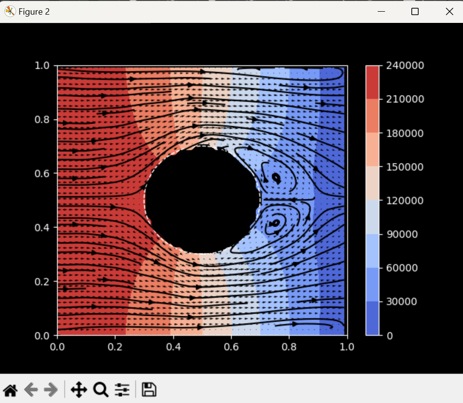

Wind Tunnel Simulation

Python
NumPy
Matplotlib
Simulations
Fluid Dynamics
Description
This project simulates two-dimensional, non-turbulent airflow around a circular obstacle using computational fluid dynamics (CFD). It visualizes pressure distributions, velocity fields, and streamlines while allowing users to adjust wind speed, obstacle size, and grid resolution interactively. By implementing realistic boundary conditions with the Navier-Stokes equations, the simulation provides an accurate and accessible tool for exploring fluid dynamics and accurately simulates the expected fluid patterns.